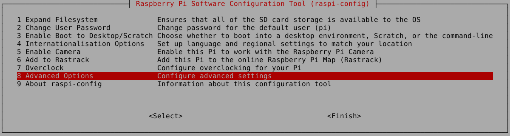
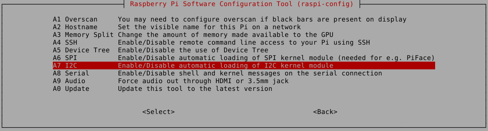
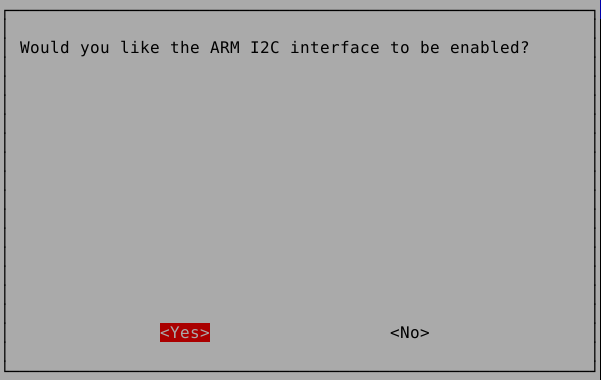

I2C(Inter-Integrated Circuit)는 필립스에서 개발한 통신 프로토콜이며, 클럭 동기화를 위한 SCL(Serial Clock)과 데이터 전송을 위한 SDA(Serial Data)로 구성되어 있다. I2C는 속도가 느리지만 하나의 버스에 많은 수의 장치를 연결할 수 있는 장점이 있다.
Raspberry Pi는 2개의 I2C Port를 지원하는데 이를 사용하기 위해서는 I2C를 활성화 시켜줘야 된다. 우선 Configuration Tool을 실행한 후 Advanced Options을 선택한다.
I2C를 선택한다
Yes를 선택한 후 재부팅한다.
부팅이 완료되면 /etc/modules 파일을 열어 i2c-dev 라인을 추가한다.
pi@raspberrypi ~$ sudo nano /etc/modules
# /etc/modules: kernel modules to load at boot time.
#
# This file contains the names of kernel modules that should be loaded
# at boot time, one per line. Lines beginning with "#" are ignored.
# Parameters can be specified after the module name.
snd-bcm2835
i2c-dev
설정을 마치고 재부팅하면 i2c를 사용할 수 있다.
테스트를 위해 i2c-tools를 설치하자
pi@raspberrypi ~$ sudo aptitute install i2c-tools
설치가 완료되면 i2cdetect 명령어를 통해 연결된 Device의 주소를 알 수 있다.
다음은 BME280 Sensor를 연결했을 경우 출력되는 주소이다.
pi@raspberrypi sudo i2cdetect -y 1
0 1 2 3 4 5 6 7 8 9 a b c d e f
00: -- -- -- -- -- -- -- -- -- -- -- -- --
10: -- -- -- -- -- -- -- -- -- -- -- -- -- -- -- --
20: -- -- -- -- -- -- -- -- -- -- -- -- -- -- -- --
30: -- -- -- -- -- -- -- -- -- -- -- -- -- -- -- --
40: -- -- -- -- -- -- -- -- -- -- -- -- -- -- -- --
50: -- -- -- -- -- -- -- -- -- -- -- -- -- -- -- --
60: -- -- -- -- -- -- -- -- -- -- -- -- -- -- -- --
70: -- -- -- -- -- -- 76 --